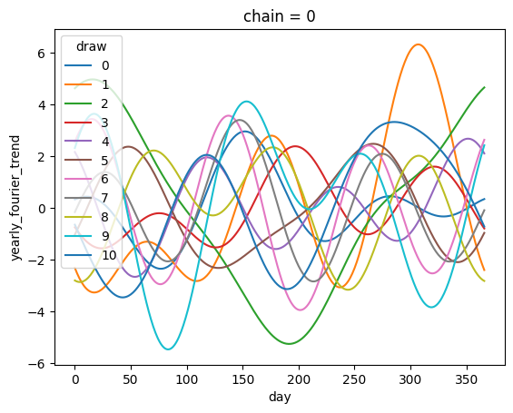

hspg = HSGP(
"hspg",
m=40,
ls=1,
eta=3,
L=60,
dims=("date",)
)PyMC Wrapper
Wrapper to unify the generation of pymc marketing priors
HSGP
HSGP (name:str, **kwargs)
Generalized prior interface for pymc-marketing. This generalizes the use of the apply method to any prior.
HSGPPeriodic
HSGPPeriodic (name:str, **kwargs)
Generalized prior interface for pymc-marketing. This generalizes the use of the apply method to any prior.
YearlyFourier
YearlyFourier (name:str, **kwargs)
Generalized prior interface for pymc-marketing. This generalizes the use of the apply method to any prior.
yearly_fourier = YearlyFourier(
name="yearly_fourier",
n_order=3,
dims=("date",),
)FourierBase.sample_prior
FourierBase.sample_prior (coords:dict|None=None, **kwargs)
Sample the prior distributions.
| Type | Default | Details | |
|---|---|---|---|
| coords | dict | None | None | Coordinates for the prior distribution, by default None |
| kwargs | VAR_KEYWORD | Additional keywords for sample_prior_predictive | |
| Returns | Dataset | Prior distribution. |
FourierBase.sample_curve
FourierBase.sample_curve (parameters:arviz.data.inference_data.InferenceD ata|xarray.core.dataset.Dataset, use_dates:bool=False, start_date:str|datetime.datetime|None=None)
Create full period of the Fourier seasonality.
| Type | Default | Details | |
|---|---|---|---|
| parameters | arviz.data.inference_data.InferenceData | xarray.core.dataset.Dataset | Inference data or dataset containing the Fourier parameters. Can be posterior or prior. |
|
| use_dates | bool | False | If True, use datetime coordinates for the x-axis. Defaults to False. |
| start_date | str | datetime.datetime | None | None | Starting date for the Fourier curve. If not provided and use_dates is True, it will be derived from the current year or month. Defaults to None. |
| Returns | DataArray | Full period of the Fourier seasonality. |
prior_sample = yearly_fourier.sample_prior(coords={"date": np.arange(0, 365)})
curve_sample = yearly_fourier.sample_curve(prior_sample)
curve_sample.sel(chain=0, draw=slice(10)).plot(x='day', hue='draw');Sampling: [yearly_fourier_beta]
Sampling: []
WeeklyFourier
WeeklyFourier (name:str, **kwargs)
Generalized prior interface for pymc-marketing. This generalizes the use of the apply method to any prior.
Prior
Prior (name:str, **kwargs)
Generalized prior interface for pymc-marketing. This generalizes the use of the apply method to any prior.
Data
Data (name:str, dims:Optional[Tuple[str]]=None)
Generalized prior interface for pymc-marketing. This generalizes the use of the apply method to any prior.